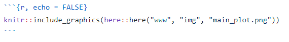

<!DOCTYPE html>

<html>

<head>

<meta charset="utf-8" />
<meta name="generator" content="pandoc" />
<meta http-equiv="X-UA-Compatible" content="IE=EDGE" />


<title> Making Interactive Case Studies Tutorial</title>

<html>

<head>

<!-- Global site tag (gtag.js) - Google Analytics -->

</head>

<body>


</body>
</html>

<style type="text/css">
  code{white-space: pre-wrap;}
  span.smallcaps{font-variant: small-caps;}
  span.underline{text-decoration: underline;}
  div.column{display: inline-block; vertical-align: top; width: 50%;}
  div.hanging-indent{margin-left: 1.5em; text-indent: -1.5em;}
  ul.task-list{list-style: none;}
    </style>


<style type="text/css">
  code {
    white-space: pre;
  }
  .sourceCode {
    overflow: visible;
  }
</style>
<style type="text/css" data-origin="pandoc">
code.sourceCode > span { display: inline-block; line-height: 1.25; }
code.sourceCode > span { color: inherit; text-decoration: inherit; }
code.sourceCode > span:empty { height: 1.2em; }
.sourceCode { overflow: visible; }
code.sourceCode { white-space: pre; position: relative; }
div.sourceCode { margin: 1em 0; }
pre.sourceCode { margin: 0; }
@media screen {
div.sourceCode { overflow: auto; }
}
@media print {
code.sourceCode { white-space: pre-wrap; }
code.sourceCode > span { text-indent: -5em; padding-left: 5em; }
}
pre.numberSource code
  { counter-reset: source-line 0; }
pre.numberSource code > span
  { position: relative; left: -4em; counter-increment: source-line; }
pre.numberSource code > span > a:first-child::before
  { content: counter(source-line);
    position: relative; left: -1em; text-align: right; vertical-align: baseline;
    border: none; display: inline-block;
    -webkit-touch-callout: none; -webkit-user-select: none;
    -khtml-user-select: none; -moz-user-select: none;
    -ms-user-select: none; user-select: none;
    padding: 0 4px; width: 4em;
    color: #aaaaaa;
  }
pre.numberSource { margin-left: 3em; border-left: 1px solid #aaaaaa;  padding-left: 4px; }
div.sourceCode
  {  background-color: #f8f8f8; }
@media screen {
code.sourceCode > span > a:first-child::before { text-decoration: underline; }
}
code span.al { color: #ef2929; } /* Alert */
code span.an { color: #8f5902; font-weight: bold; font-style: italic; } /* Annotation */
code span.at { color: #c4a000; } /* Attribute */
code span.bn { color: #0000cf; } /* BaseN */
code span.cf { color: #204a87; font-weight: bold; } /* ControlFlow */
code span.ch { color: #4e9a06; } /* Char */
code span.cn { color: #000000; } /* Constant */
code span.co { color: #8f5902; font-style: italic; } /* Comment */
code span.cv { color: #8f5902; font-weight: bold; font-style: italic; } /* CommentVar */
code span.do { color: #8f5902; font-weight: bold; font-style: italic; } /* Documentation */
code span.dt { color: #204a87; } /* DataType */
code span.dv { color: #0000cf; } /* DecVal */
code span.er { color: #a40000; font-weight: bold; } /* Error */
code span.ex { } /* Extension */
code span.fl { color: #0000cf; } /* Float */
code span.fu { color: #000000; } /* Function */
code span.im { } /* Import */
code span.in { color: #8f5902; font-weight: bold; font-style: italic; } /* Information */
code span.kw { color: #204a87; font-weight: bold; } /* Keyword */
code span.op { color: #ce5c00; font-weight: bold; } /* Operator */
code span.ot { color: #8f5902; } /* Other */
code span.pp { color: #8f5902; font-style: italic; } /* Preprocessor */
code span.sc { color: #000000; } /* SpecialChar */
code span.ss { color: #4e9a06; } /* SpecialString */
code span.st { color: #4e9a06; } /* String */
code span.va { color: #000000; } /* Variable */
code span.vs { color: #4e9a06; } /* VerbatimString */
code span.wa { color: #8f5902; font-weight: bold; font-style: italic; } /* Warning */

</style>
<script>
// apply pandoc div.sourceCode style to pre.sourceCode instead
(function() {
  var sheets = document.styleSheets;
  for (var i = 0; i < sheets.length; i++) {
    if (sheets[i].ownerNode.dataset["origin"] !== "pandoc") continue;
    try { var rules = sheets[i].cssRules; } catch (e) { continue; }
    for (var j = 0; j < rules.length; j++) {
      var rule = rules[j];
      // check if there is a div.sourceCode rule
      if (rule.type !== rule.STYLE_RULE || rule.selectorText !== "div.sourceCode") continue;
      var style = rule.style.cssText;
      // check if color or background-color is set
      if (rule.style.color === '' && rule.style.backgroundColor === '') continue;
      // replace div.sourceCode by a pre.sourceCode rule
      sheets[i].deleteRule(j);
      sheets[i].insertRule('pre.sourceCode{' + style + '}', j);
    }
  }
})();
</script>


<style type="text/css">
#rmd-source-code {
  display: none;
}
</style>


<link rel="stylesheet" href="www/style.css" type="text/css" />


<style type = "text/css">
.main-container {
  max-width: 940px;
  margin-left: auto;
  margin-right: auto;
}
img {
  max-width:100%;
}
.tabbed-pane {
  padding-top: 12px;
}
.html-widget {
  margin-bottom: 20px;
}
button.code-folding-btn:focus {
  outline: none;
}
summary {
  display: list-item;
}
pre code {
  padding: 0;
}
</style>


<!-- tabsets -->

<style type="text/css">
.tabset-dropdown > .nav-tabs {
  display: inline-table;
  max-height: 500px;
  min-height: 44px;
  overflow-y: auto;
  border: 1px solid #ddd;
  border-radius: 4px;
}

.tabset-dropdown > .nav-tabs > li.active:before {
  content: "";
  font-family: 'Glyphicons Halflings';
  display: inline-block;
  padding: 10px;
  border-right: 1px solid #ddd;
}

.tabset-dropdown > .nav-tabs.nav-tabs-open > li.active:before {
  content: "&#xe258;";
  border: none;
}

.tabset-dropdown > .nav-tabs.nav-tabs-open:before {
  content: "";
  font-family: 'Glyphicons Halflings';
  display: inline-block;
  padding: 10px;
  border-right: 1px solid #ddd;
}

.tabset-dropdown > .nav-tabs > li.active {
  display: block;
}

.tabset-dropdown > .nav-tabs > li > a,
.tabset-dropdown > .nav-tabs > li > a:focus,
.tabset-dropdown > .nav-tabs > li > a:hover {
  border: none;
  display: inline-block;
  border-radius: 4px;
  background-color: transparent;
}

.tabset-dropdown > .nav-tabs.nav-tabs-open > li {
  display: block;
  float: none;
}

.tabset-dropdown > .nav-tabs > li {
  display: none;
}
</style>

<!-- code folding -->
<style type="text/css">
.code-folding-btn { margin-bottom: 4px; }
</style>


<style type="text/css">

#section-TOC {
  margin: 25px 0px 20px 0px;
}
@media (max-width: 768px) {
#section-TOC {
  position: relative;
  width: 100%;
}
}

@media print {
.toc-content {
  /* see https://github.com/w3c/csswg-drafts/issues/4434 */
  float: right;
}
}

.toc-content {
  padding-left: 30px;
  padding-right: 40px;
}

div.main-container {
  max-width: 1200px;
}

div.tocify {
  width: 20%;
  max-width: 260px;
  max-height: 85%;
}

@media (min-width: 768px) and (max-width: 991px) {
  div.tocify {
    width: 25%;
  }
}

@media (max-width: 767px) {
  div.tocify {
    width: 100%;
    max-width: none;
  }
}

.tocify ul, .tocify li {
  line-height: 20px;
}

.tocify-subheader .tocify-item {
  font-size: 0.90em;
}

.tocify .list-group-item {
  border-radius: 0px;
}


</style>


</head>

<body>


<div class="container-fluid main-container">


<!-- setup 3col/9col grid for toc_float and main content  -->
<div class="row">
<div class="col-sm-12 col-md-4 col-lg-3">
<div id="section-TOC" class="tocify">
</div>
</div>

<div class="toc-content col-sm-12 col-md-8 col-lg-9">


<div id="section-header">

<div class="btn-group pull-right float-right">
<button type="button" class="btn btn-default btn-xs btn-secondary btn-sm dropdown-toggle" data-toggle="dropdown" aria-haspopup="true" aria-expanded="false"><span>Code</span> <span class="caret"></span></button>
<ul class="dropdown-menu dropdown-menu-right" style="min-width: 50px;">
<li><a id="rmd-download-source" href="#">Download Rmd</a></li>
</ul>
</div>


<h1 class="title toc-ignore"><p> Making Interactive Case Studies Tutorial</p></h1>

</div>


<!-- Open all links in new tab-->
<p><base target="_blank"/></p>
<p>
 
</p>
<div id="section-setting-up" class="section level1">
<h1><strong>1. Setting Up</strong></h1>
<hr />
<div id="section-www-directory" class="section level2">
<h2><strong><code>www</code> Directory</strong></h2>
<hr />
<p>Only the files in this <code>www</code> directory will be published with the <code>index.Rmd</code>.</p>
<p>In this <code>www</code> directory, we need to have:</p>
<ul>
<li><code>style.css</code></li>
<li><code>GA_Script.Rhtml</code></li>
<li>move the <code>data</code>, <code>docs</code>, <code>img</code>, etc. directories of the static version into the <code>www</code> directory. These directories contain the files needed to render the <code>index.Rmd</code> file.</li>
<li>Additionally, we need to make an <strong><code>exercise</code> sub-directory</strong>. This is where we would put the <code>.rda</code> files for the “setup” of the exercises.</li>
</ul>
</div>
<div id="section-yaml-header" class="section level2">
<h2><strong>YAML Header</strong></h2>
<hr />
<p>Refer to the YAML header of this <code>.Rmd</code> file.</p>
<p>Important notes (the followings are different from the static version):</p>
<ul>
<li>title</li>
<li><code>css: www/style.css</code> (the statics version does not have the <code>www</code> directory)</li>
<li><code>in_header: www/GA_Script.Rhtml</code> (the statics version does not have the <code>www</code> directory)</li>
<li>the addition of <code>runtime: shiny_prerendered</code></li>
</ul>
</div>
<div id="section-r-setup-chunk" class="section level2">
<h2><strong>R Setup Chunk</strong></h2>
<hr />
<p>Refer to the setup chunk of this <code>.Rmd</code> file.</p>
<p>The main difference here is the addition of the the following libraries:</p>
<div class="sourceCode" id="section-cb1"><pre class="sourceCode r"><code class="sourceCode r"><span id="cb1-1"><a href="#cb1-1"></a><span class="kw">library</span>(learnr)</span>
<span id="cb1-2"><a href="#cb1-2"></a><span class="kw">library</span>(gradethis)</span>
<span id="cb1-3"><a href="#cb1-3"></a>gradethis<span class="op">::</span><span class="kw">gradethis_setup</span>()</span></code></pre></div>
<p><em>Note: you might need to install <code>gradethis</code> from <a href="https://github.com/rstudio/gradethis">github</a></em></p>
</div>
<div id="section-translate" class="section level2">
<h2><strong>Translate</strong></h2>
<hr />
<p>Use the following code for translation</p>
<pre><code>&lt;div align=&quot;left&quot; id=&quot;google_translate_element&quot;,&gt;&lt;/div&gt;

&lt;script type=&quot;text/javascript&quot; src=&#39;//translate.google.com/translate_a/element.js?cb=googleTranslateElementInit&#39;&gt;&lt;/script&gt;

&lt;script type=&quot;text/javascript&quot;&gt;
function googleTranslateElementInit() {
  new google.translate.TranslateElement({pageLanguage: &#39;en&#39;}, &#39;google_translate_element&#39;);
}
&lt;/script&gt;</code></pre>
<p><em>Note: this is different from the statics version. There is an extra “comma” at the end of <code>id="google_translate_element"</code>. The translation tool would not work without this comma (not sure why).</em></p>
</div>
<div id="section-table-of-content" class="section level2">
<h2><strong>Table of Content</strong></h2>
<hr />
<p>You might want to get rid of the following css code from the static version</p>
<pre><code>&lt;style&gt;
#TOC {
  background: url(&quot;https://opencasestudies.github.io/img/icon-bahi.png&quot;);
  background-size: contain;
  padding-top: 240px !important;
  background-repeat: no-repeat;
}
&lt;/style&gt;</code></pre>
<p>Unlike in the static version, this would not add the logo to the table of content in the interactive app. Could work on how to add logo to the toc for interactive apps.</p>
</div>
<div id="section-gitignore" class="section level2">
<h2><strong><code>.gitignore</code></strong></h2>
<hr />
<p>Add <code>rsconnect/</code> to the <code>.gitignore</code> file</p>
</div>
<div id="section-optional-add-exercise_block-to-wwwstyle.css" class="section level2">
<h2><strong>Optional: Add <code>exercise_block</code> to <code>www/style.css</code></strong></h2>
<hr />
<p>You could add a specific style for the exercises by adding the following code to the <code>style.css</code> file:</p>
<pre><code>.exercise_block {
    padding: .5em;
    border: 1px solid lightgrey;
    background: white;
    color: black;
}</code></pre>
<div id="section-section" class="section level4 exercise_block">
<h4></h4>
<p>This is what the exercise block looks like. You might modify it if you want.</p>
</div>
<div id="section-section-1" class="section level4">
<h4></h4>
</div>
</div>
</div>
<div id="section-modifications-of-the-static-version" class="section level1">
<h1><strong>2. Modifications of the Static Version</strong></h1>
<hr />
<div id="section-data-docs-img-etc.-directories-are-now-sub-directories-of-www" class="section level2">
<h2><strong><code>data</code>, <code>docs</code>, <code>img</code>, etc. Directories are now Sub-Directories of <code>www</code></strong></h2>
<hr />
<p>I will use some examples to explain this. <strong>A quick way to find where needs to be modified is to do <code>CTRL + F</code> and search for <code>here(</code></strong></p>
<div id="section-case-1-simply-add-the-www-directory" class="section level3">
<h3>Case 1: simply add the <code>www</code> directory</h3>
<hr />
<p><em>In the static version:</em></p>
<p></p>
<hr />
<p><em>In the interactive version:</em></p>
<p></p>
<hr />
</div>
<div id="section-case-2-set-the-original-chunk-to-eval-false-and-the-new-chunk-to-echo-false" class="section level3">
<h3>Case 2: set the original chunk to <code>eval = FALSE</code> and the new chunk to <code>echo = FALSE</code></h3>
<hr />
<p><em>In the static version:</em></p>
<p></p>
<hr />
<p><em>In the interactive version:</em></p>
<p></p>
<hr />
</div>
</div>
</div>
<div id="section-add-exercises" class="section level1">
<h1><strong>3. Add Exercises</strong></h1>

<script type="application/shiny-prerendered" data-context="server-start">
knitr::opts_chunk$set(include = TRUE, comment = NA, echo = TRUE,
                      message = FALSE, warning = FALSE, cache = FALSE,
                      fig.align = "center", out.width = '90%')
library(knitr)
library(here)

# additional libraries needed
library(learnr)
library(gradethis)
gradethis::gradethis_setup()
</script>
 
<script type="application/shiny-prerendered" data-context="server">
learnr:::register_http_handlers(session, metadata = NULL)
</script>
 
<script type="application/shiny-prerendered" data-context="server">
learnr:::clear_exercise_cache_env()
</script>
 
<script type="application/shiny-prerendered" data-context="server">
session$onSessionEnded(function() {
        learnr:::event_trigger(session, "session_stop")
      })
</script>
 
<script type="application/shiny-prerendered" data-context="server">
learnr:::store_exercise_setup_chunk("__setup__", c("knitr::opts_chunk$set(include = TRUE, comment = NA, echo = TRUE,", 
"                      message = FALSE, warning = FALSE, cache = FALSE,", 
"                      fig.align = \"center\", out.width = '90%')", 
"library(knitr)", "library(here)", "", "# additional libraries needed", 
"library(learnr)", "library(gradethis)", "gradethis::gradethis_setup()"
), overwrite = FALSE)
</script>
 
<script type="application/shiny-prerendered" data-context="server">
learnr:::store_exercise_setup_chunk("__setup__", c("knitr::opts_chunk$set(include = TRUE, comment = NA, echo = TRUE,", 
"                      message = FALSE, warning = FALSE, cache = FALSE,", 
"                      fig.align = \"center\", out.width = '90%')", 
"library(knitr)", "library(here)", "", "# additional libraries needed", 
"library(learnr)", "library(gradethis)", "gradethis::gradethis_setup()"
), overwrite = FALSE)
</script>
 
<script type="application/shiny-prerendered" data-context="server">
learnr:::store_exercise_setup_chunk("__setup__", c("knitr::opts_chunk$set(include = TRUE, comment = NA, echo = TRUE,", 
"                      message = FALSE, warning = FALSE, cache = FALSE,", 
"                      fig.align = \"center\", out.width = '90%')", 
"library(knitr)", "library(here)", "", "# additional libraries needed", 
"library(learnr)", "library(gradethis)", "gradethis::gradethis_setup()"
), overwrite = FALSE)
</script>
 
<script type="application/shiny-prerendered" data-context="server">
learnr:::store_exercise_setup_chunk("__setup__", c("knitr::opts_chunk$set(include = TRUE, comment = NA, echo = TRUE,", 
"                      message = FALSE, warning = FALSE, cache = FALSE,", 
"                      fig.align = \"center\", out.width = '90%')", 
"library(knitr)", "library(here)", "", "# additional libraries needed", 
"library(learnr)", "library(gradethis)", "gradethis::gradethis_setup()"
), overwrite = FALSE)
</script>
 <!--html_preserve-->
<script type="application/shiny-prerendered" data-context="dependencies">
{"type":"list","attributes":{},"value":[{"type":"list","attributes":{"names":{"type":"character","attributes":{},"value":["name","version","src","meta","script","stylesheet","head","attachment","package","all_files","pkgVersion"]},"class":{"type":"character","attributes":{},"value":["html_dependency"]}},"value":[{"type":"character","attributes":{},"value":["jquery"]},{"type":"character","attributes":{},"value":["1.11.3"]},{"type":"list","attributes":{"names":{"type":"character","attributes":{},"value":["file"]}},"value":[{"type":"character","attributes":{},"value":["rmd/h/jquery"]}]},{"type":"NULL"},{"type":"character","attributes":{},"value":["jquery.min.js"]},{"type":"NULL"},{"type":"NULL"},{"type":"NULL"},{"type":"character","attributes":{},"value":["rmarkdown"]},{"type":"logical","attributes":{},"value":[true]},{"type":"character","attributes":{},"value":["2.7"]}]},{"type":"list","attributes":{"names":{"type":"character","attributes":{},"value":["name","version","src","meta","script","stylesheet","head","attachment","package","all_files","pkgVersion"]},"class":{"type":"character","attributes":{},"value":["html_dependency"]}},"value":[{"type":"character","attributes":{},"value":["bootstrap"]},{"type":"character","attributes":{},"value":["3.3.5"]},{"type":"list","attributes":{"names":{"type":"character","attributes":{},"value":["file"]}},"value":[{"type":"character","attributes":{},"value":["rmd/h/bootstrap"]}]},{"type":"list","attributes":{"names":{"type":"character","attributes":{},"value":["viewport"]}},"value":[{"type":"character","attributes":{},"value":["width=device-width, initial-scale=1"]}]},{"type":"character","attributes":{},"value":["js/bootstrap.min.js","shim/html5shiv.min.js","shim/respond.min.js"]},{"type":"character","attributes":{},"value":["css/cosmo.min.css"]},{"type":"character","attributes":{},"value":["<style>h1 {font-size: 34px;}\n       h1.title {font-size: 38px;}\n       h2 {font-size: 30px;}\n       h3 {font-size: 24px;}\n       h4 {font-size: 18px;}\n       h5 {font-size: 16px;}\n       h6 {font-size: 12px;}\n       code {color: inherit; background-color: rgba(0, 0, 0, 0.04);}\n       pre:not([class]) { background-color: white }<\/style>"]},{"type":"NULL"},{"type":"character","attributes":{},"value":["rmarkdown"]},{"type":"logical","attributes":{},"value":[true]},{"type":"character","attributes":{},"value":["2.7"]}]},{"type":"list","attributes":{"names":{"type":"character","attributes":{},"value":["name","version","src","meta","script","stylesheet","head","attachment","package","all_files","pkgVersion"]},"class":{"type":"character","attributes":{},"value":["html_dependency"]}},"value":[{"type":"character","attributes":{},"value":["jquery"]},{"type":"character","attributes":{},"value":["1.11.3"]},{"type":"list","attributes":{"names":{"type":"character","attributes":{},"value":["file"]}},"value":[{"type":"character","attributes":{},"value":["rmd/h/jquery"]}]},{"type":"NULL"},{"type":"character","attributes":{},"value":["jquery.min.js"]},{"type":"NULL"},{"type":"NULL"},{"type":"NULL"},{"type":"character","attributes":{},"value":["rmarkdown"]},{"type":"logical","attributes":{},"value":[true]},{"type":"character","attributes":{},"value":["2.7"]}]},{"type":"list","attributes":{"names":{"type":"character","attributes":{},"value":["name","version","src","meta","script","stylesheet","head","attachment","package","all_files","pkgVersion"]},"class":{"type":"character","attributes":{},"value":["html_dependency"]}},"value":[{"type":"character","attributes":{},"value":["jqueryui"]},{"type":"character","attributes":{},"value":["1.11.4"]},{"type":"list","attributes":{"names":{"type":"character","attributes":{},"value":["file"]}},"value":[{"type":"character","attributes":{},"value":["rmd/h/jqueryui"]}]},{"type":"NULL"},{"type":"character","attributes":{},"value":["jquery-ui.min.js"]},{"type":"NULL"},{"type":"NULL"},{"type":"NULL"},{"type":"character","attributes":{},"value":["rmarkdown"]},{"type":"logical","attributes":{},"value":[true]},{"type":"character","attributes":{},"value":["2.7"]}]},{"type":"list","attributes":{"names":{"type":"character","attributes":{},"value":["name","version","src","meta","script","stylesheet","head","attachment","package","all_files","pkgVersion"]},"class":{"type":"character","attributes":{},"value":["html_dependency"]}},"value":[{"type":"character","attributes":{},"value":["tocify"]},{"type":"character","attributes":{},"value":["1.9.1"]},{"type":"list","attributes":{"names":{"type":"character","attributes":{},"value":["file"]}},"value":[{"type":"character","attributes":{},"value":["rmd/h/tocify"]}]},{"type":"NULL"},{"type":"character","attributes":{},"value":["jquery.tocify.js"]},{"type":"character","attributes":{},"value":["jquery.tocify.css"]},{"type":"NULL"},{"type":"NULL"},{"type":"character","attributes":{},"value":["rmarkdown"]},{"type":"logical","attributes":{},"value":[true]},{"type":"character","attributes":{},"value":["2.7"]}]},{"type":"list","attributes":{"names":{"type":"character","attributes":{},"value":["name","version","src","meta","script","stylesheet","head","attachment","package","all_files","pkgVersion"]},"class":{"type":"character","attributes":{},"value":["html_dependency"]}},"value":[{"type":"character","attributes":{},"value":["jquery"]},{"type":"character","attributes":{},"value":["1.11.3"]},{"type":"list","attributes":{"names":{"type":"character","attributes":{},"value":["file"]}},"value":[{"type":"character","attributes":{},"value":["rmd/h/jquery"]}]},{"type":"NULL"},{"type":"character","attributes":{},"value":["jquery.min.js"]},{"type":"NULL"},{"type":"NULL"},{"type":"NULL"},{"type":"character","attributes":{},"value":["rmarkdown"]},{"type":"logical","attributes":{},"value":[true]},{"type":"character","attributes":{},"value":["2.7"]}]},{"type":"list","attributes":{"names":{"type":"character","attributes":{},"value":["name","version","src","meta","script","stylesheet","head","attachment","package","all_files","pkgVersion"]},"class":{"type":"character","attributes":{},"value":["html_dependency"]}},"value":[{"type":"character","attributes":{},"value":["navigation"]},{"type":"character","attributes":{},"value":["1.1"]},{"type":"list","attributes":{"names":{"type":"character","attributes":{},"value":["file"]}},"value":[{"type":"character","attributes":{},"value":["rmd/h/navigation-1.1"]}]},{"type":"NULL"},{"type":"character","attributes":{},"value":["tabsets.js","codefolding.js","sourceembed.js"]},{"type":"NULL"},{"type":"NULL"},{"type":"NULL"},{"type":"character","attributes":{},"value":["rmarkdown"]},{"type":"logical","attributes":{},"value":[true]},{"type":"character","attributes":{},"value":["2.7"]}]},{"type":"list","attributes":{"names":{"type":"character","attributes":{},"value":["name","version","src","meta","script","stylesheet","head","attachment","package","all_files","pkgVersion"]},"class":{"type":"character","attributes":{},"value":["html_dependency"]}},"value":[{"type":"character","attributes":{},"value":["accessible-code-block"]},{"type":"character","attributes":{},"value":["0.0.1"]},{"type":"list","attributes":{"names":{"type":"character","attributes":{},"value":["file"]}},"value":[{"type":"character","attributes":{},"value":["rmd/h/accessibility"]}]},{"type":"NULL"},{"type":"character","attributes":{},"value":["empty-anchor.js"]},{"type":"NULL"},{"type":"NULL"},{"type":"NULL"},{"type":"character","attributes":{},"value":["rmarkdown"]},{"type":"logical","attributes":{},"value":[true]},{"type":"character","attributes":{},"value":["2.7"]}]},{"type":"list","attributes":{"names":{"type":"character","attributes":{},"value":["name","version","src","meta","script","stylesheet","head","attachment","package","all_files","pkgVersion"]},"class":{"type":"character","attributes":{},"value":["html_dependency"]}},"value":[{"type":"character","attributes":{},"value":["jquery"]},{"type":"character","attributes":{},"value":["1.11.3"]},{"type":"list","attributes":{"names":{"type":"character","attributes":{},"value":["file"]}},"value":[{"type":"character","attributes":{},"value":["rmd/h/jquery"]}]},{"type":"NULL"},{"type":"character","attributes":{},"value":["jquery.min.js"]},{"type":"NULL"},{"type":"NULL"},{"type":"NULL"},{"type":"character","attributes":{},"value":["rmarkdown"]},{"type":"logical","attributes":{},"value":[true]},{"type":"character","attributes":{},"value":["2.7"]}]},{"type":"list","attributes":{"names":{"type":"character","attributes":{},"value":["name","version","src","meta","script","stylesheet","head","attachment","package","all_files","pkgVersion"]},"class":{"type":"character","attributes":{},"value":["html_dependency"]}},"value":[{"type":"character","attributes":{},"value":["font-awesome"]},{"type":"character","attributes":{},"value":["5.1.0"]},{"type":"list","attributes":{"names":{"type":"character","attributes":{},"value":["file"]}},"value":[{"type":"character","attributes":{},"value":["rmd/h/fontawesome"]}]},{"type":"NULL"},{"type":"NULL"},{"type":"character","attributes":{},"value":["css/all.css","css/v4-shims.css"]},{"type":"NULL"},{"type":"NULL"},{"type":"character","attributes":{},"value":["rmarkdown"]},{"type":"logical","attributes":{},"value":[true]},{"type":"character","attributes":{},"value":["2.7"]}]},{"type":"list","attributes":{"names":{"type":"character","attributes":{},"value":["name","version","src","meta","script","stylesheet","head","attachment","package","all_files","pkgVersion"]},"class":{"type":"character","attributes":{},"value":["html_dependency"]}},"value":[{"type":"character","attributes":{},"value":["bootbox"]},{"type":"character","attributes":{},"value":["4.4.0"]},{"type":"list","attributes":{"names":{"type":"character","attributes":{},"value":["file"]}},"value":[{"type":"character","attributes":{},"value":["lib/bootbox"]}]},{"type":"NULL"},{"type":"character","attributes":{},"value":["bootbox.min.js"]},{"type":"NULL"},{"type":"NULL"},{"type":"NULL"},{"type":"character","attributes":{},"value":["learnr"]},{"type":"logical","attributes":{},"value":[true]},{"type":"character","attributes":{},"value":["0.10.1.9008"]}]},{"type":"list","attributes":{"names":{"type":"character","attributes":{},"value":["name","version","src","meta","script","stylesheet","head","attachment","package","all_files","pkgVersion"]},"class":{"type":"character","attributes":{},"value":["html_dependency"]}},"value":[{"type":"character","attributes":{},"value":["idb-keyvalue"]},{"type":"character","attributes":{},"value":["3.2.0"]},{"type":"list","attributes":{"names":{"type":"character","attributes":{},"value":["file"]}},"value":[{"type":"character","attributes":{},"value":["lib/idb-keyval"]}]},{"type":"NULL"},{"type":"character","attributes":{},"value":["idb-keyval-iife-compat.min.js"]},{"type":"NULL"},{"type":"NULL"},{"type":"NULL"},{"type":"character","attributes":{},"value":["learnr"]},{"type":"logical","attributes":{},"value":[false]},{"type":"character","attributes":{},"value":["0.10.1.9008"]}]},{"type":"list","attributes":{"names":{"type":"character","attributes":{},"value":["name","version","src","meta","script","stylesheet","head","attachment","package","all_files","pkgVersion"]},"class":{"type":"character","attributes":{},"value":["html_dependency"]}},"value":[{"type":"character","attributes":{},"value":["tutorial"]},{"type":"character","attributes":{},"value":["0.10.1.9008"]},{"type":"list","attributes":{"names":{"type":"character","attributes":{},"value":["file"]}},"value":[{"type":"character","attributes":{},"value":["lib/tutorial"]}]},{"type":"NULL"},{"type":"character","attributes":{},"value":["tutorial.js"]},{"type":"character","attributes":{},"value":["tutorial.css"]},{"type":"NULL"},{"type":"NULL"},{"type":"character","attributes":{},"value":["learnr"]},{"type":"logical","attributes":{},"value":[true]},{"type":"character","attributes":{},"value":["0.10.1.9008"]}]},{"type":"list","attributes":{"names":{"type":"character","attributes":{},"value":["name","version","src","meta","script","stylesheet","head","attachment","package","all_files","pkgVersion"]},"class":{"type":"character","attributes":{},"value":["html_dependency"]}},"value":[{"type":"character","attributes":{},"value":["tutorial-autocompletion"]},{"type":"character","attributes":{},"value":["0.10.1.9008"]},{"type":"list","attributes":{"names":{"type":"character","attributes":{},"value":["file"]}},"value":[{"type":"character","attributes":{},"value":["lib/tutorial"]}]},{"type":"NULL"},{"type":"character","attributes":{},"value":["tutorial-autocompletion.js"]},{"type":"NULL"},{"type":"NULL"},{"type":"NULL"},{"type":"character","attributes":{},"value":["learnr"]},{"type":"logical","attributes":{},"value":[true]},{"type":"character","attributes":{},"value":["0.10.1.9008"]}]},{"type":"list","attributes":{"names":{"type":"character","attributes":{},"value":["name","version","src","meta","script","stylesheet","head","attachment","package","all_files","pkgVersion"]},"class":{"type":"character","attributes":{},"value":["html_dependency"]}},"value":[{"type":"character","attributes":{},"value":["tutorial-diagnostics"]},{"type":"character","attributes":{},"value":["0.10.1.9008"]},{"type":"list","attributes":{"names":{"type":"character","attributes":{},"value":["file"]}},"value":[{"type":"character","attributes":{},"value":["lib/tutorial"]}]},{"type":"NULL"},{"type":"character","attributes":{},"value":["tutorial-diagnostics.js"]},{"type":"NULL"},{"type":"NULL"},{"type":"NULL"},{"type":"character","attributes":{},"value":["learnr"]},{"type":"logical","attributes":{},"value":[true]},{"type":"character","attributes":{},"value":["0.10.1.9008"]}]}]}
</script>
<!--/html_preserve-->
<!--html_preserve-->
<script type="application/shiny-prerendered" data-context="execution_dependencies">
{"type":"list","attributes":{"names":{"type":"character","attributes":{},"value":["packages"]}},"value":[{"type":"list","attributes":{"names":{"type":"character","attributes":{},"value":["packages","version"]},"class":{"type":"character","attributes":{},"value":["data.frame"]},"row.names":{"type":"integer","attributes":{},"value":[1,2,3,4,5,6,7,8,9,10,11,12,13,14,15,16,17,18,19,20,21,22,23,24,25,26,27,28,29,30,31,32,33,34,35,36,37,38,39,40,41,42,43]}},"value":[{"type":"character","attributes":{},"value":["base","bslib","compiler","curl","datasets","digest","ellipsis","evaluate","fastmap","gradethis","graphics","grDevices","here","htmltools","htmlwidgets","httpuv","jquerylib","jsonlite","knitr","later","learnr","lifecycle","magrittr","markdown","methods","mime","promises","R6","Rcpp","rlang","rmarkdown","rprojroot","sass","shiny","stats","stringi","stringr","tools","utils","withr","xfun","xtable","yaml"]},{"type":"character","attributes":{},"value":["4.0.2","0.2.4","4.0.2","4.3","4.0.2","0.6.27","0.3.1","0.14","1.1.0","0.2.3.9001","4.0.2","4.0.2","0.1","0.5.1.1","1.5.3","1.6.0","0.1.3","1.7.2","1.33","1.2.0","0.10.1.9008","1.0.0","2.0.1","1.1","4.0.2","0.10","1.2.0.1","2.5.0","1.0.6","0.4.10","2.7","2.0.2","0.3.1","1.6.0","4.0.2","1.5.3","1.4.0","4.0.2","4.0.2","2.4.2","0.22","1.8-4","2.2.1"]}]}]}
</script>
<!--/html_preserve-->
</div>

<div id="rmd-source-code">LS0tDQp0aXRsZTogfA0KICAhW10oaHR0cHM6Ly9vcGVuY2FzZXN0dWRpZXMuZ2l0aHViLmlvL2ltZy9pY29uLWJhaGkucG5nKXt3aWR0aD0xMjBweCBhbGlnbj1sZWZ0IHN0eWxlPSJwYWRkaW5nLXJpZ2h0OiAyMHB4In0NCiAgTWFraW5nIEludGVyYWN0aXZlIENhc2UgU3R1ZGllcyBUdXRvcmlhbA0KY3NzOiB3d3cvc3R5bGUuY3NzDQpvdXRwdXQ6DQogIGh0bWxfZG9jdW1lbnQ6DQogICAgaW5jbHVkZXM6DQogICAgICAgaW5faGVhZGVyOiB3d3cvR0FfU2NyaXB0LlJodG1sDQogICAgc2VsZl9jb250YWluZWQ6IHllcw0KICAgIGNvZGVfZG93bmxvYWQ6IHllcw0KICAgIGhpZ2hsaWdodDogdGFuZ28NCiAgICBudW1iZXJfc2VjdGlvbnM6IG5vDQogICAgdGhlbWU6IGNvc21vDQogICAgdG9jOiB5ZXMNCiAgICB0b2NfZmxvYXQ6IHllcw0KICBwZGZfZG9jdW1lbnQ6DQogICAgdG9jOiB5ZXMNCiAgd29yZF9kb2N1bWVudDoNCiAgICB0b2M6IHllcw0KcnVudGltZTogc2hpbnlfcHJlcmVuZGVyZWQNCi0tLQ0KDQpgYGB7ciBzZXR1cCwgaW5jbHVkZT1GQUxTRX0NCmtuaXRyOjpvcHRzX2NodW5rJHNldChpbmNsdWRlID0gVFJVRSwgY29tbWVudCA9IE5BLCBlY2hvID0gVFJVRSwNCiAgICAgICAgICAgICAgICAgICAgICBtZXNzYWdlID0gRkFMU0UsIHdhcm5pbmcgPSBGQUxTRSwgY2FjaGUgPSBGQUxTRSwNCiAgICAgICAgICAgICAgICAgICAgICBmaWcuYWxpZ24gPSAiY2VudGVyIiwgb3V0LndpZHRoID0gJzkwJScpDQpsaWJyYXJ5KGtuaXRyKQ0KbGlicmFyeShoZXJlKQ0KDQojIGFkZGl0aW9uYWwgbGlicmFyaWVzIG5lZWRlZA0KbGlicmFyeShsZWFybnIpDQpsaWJyYXJ5KGdyYWRldGhpcykNCmdyYWRldGhpczo6Z3JhZGV0aGlzX3NldHVwKCkNCmBgYA0KDQo8IS0tIE9wZW4gYWxsIGxpbmtzIGluIG5ldyB0YWItLT4gIA0KPGJhc2UgdGFyZ2V0PSJfYmxhbmsiLz4gDQoNCjxwPiZuYnNwOzwvcD4NCg0KIyAqKjEuIFNldHRpbmcgVXAqKg0KKioqDQoNCiMjICoqYHd3d2AgRGlyZWN0b3J5KioNCioqKg0KDQpPbmx5IHRoZSBmaWxlcyBpbiB0aGlzIGB3d3dgIGRpcmVjdG9yeSB3aWxsIGJlIHB1Ymxpc2hlZCB3aXRoIHRoZSBgaW5kZXguUm1kYC4NCg0KSW4gdGhpcyBgd3d3YCBkaXJlY3RvcnksIHdlIG5lZWQgdG8gaGF2ZToNCg0KKiBgc3R5bGUuY3NzYA0KKiBgR0FfU2NyaXB0LlJodG1sYA0KKiAgbW92ZSB0aGUgYGRhdGFgLCBgZG9jc2AsIGBpbWdgLCBldGMuIGRpcmVjdG9yaWVzIG9mIHRoZSBzdGF0aWMgdmVyc2lvbiBpbnRvIHRoZSBgd3d3YCBkaXJlY3RvcnkuIFRoZXNlIGRpcmVjdG9yaWVzIGNvbnRhaW4gdGhlIGZpbGVzIG5lZWRlZCB0byByZW5kZXIgdGhlIGBpbmRleC5SbWRgIGZpbGUuDQoqIEFkZGl0aW9uYWxseSwgd2UgbmVlZCB0byBtYWtlIGFuICoqYGV4ZXJjaXNlYCBzdWItZGlyZWN0b3J5KiouIFRoaXMgaXMgd2hlcmUgd2Ugd291bGQgcHV0IHRoZSBgLnJkYWAgZmlsZXMgZm9yIHRoZSAic2V0dXAiIG9mIHRoZSBleGVyY2lzZXMuDQoNCiMjICoqWUFNTCBIZWFkZXIqKg0KKioqDQoNClJlZmVyIHRvIHRoZSBZQU1MIGhlYWRlciBvZiB0aGlzIGAuUm1kYCBmaWxlLg0KDQpJbXBvcnRhbnQgbm90ZXMgKHRoZSBmb2xsb3dpbmdzIGFyZSBkaWZmZXJlbnQgZnJvbSB0aGUgc3RhdGljIHZlcnNpb24pOg0KDQoqIHRpdGxlDQoqIGBjc3M6IHd3dy9zdHlsZS5jc3NgICh0aGUgc3RhdGljcyB2ZXJzaW9uIGRvZXMgbm90IGhhdmUgdGhlIGB3d3dgIGRpcmVjdG9yeSkNCiogYGluX2hlYWRlcjogd3d3L0dBX1NjcmlwdC5SaHRtbGAgKHRoZSBzdGF0aWNzIHZlcnNpb24gZG9lcyBub3QgaGF2ZSB0aGUgYHd3d2AgZGlyZWN0b3J5KQ0KKiB0aGUgYWRkaXRpb24gb2YgYHJ1bnRpbWU6IHNoaW55X3ByZXJlbmRlcmVkYA0KDQojIyAqKlIgU2V0dXAgQ2h1bmsqKg0KKioqDQoNClJlZmVyIHRvIHRoZSBzZXR1cCBjaHVuayBvZiB0aGlzIGAuUm1kYCBmaWxlLg0KDQpUaGUgbWFpbiBkaWZmZXJlbmNlIGhlcmUgaXMgdGhlIGFkZGl0aW9uIG9mIHRoZSB0aGUgZm9sbG93aW5nIGxpYnJhcmllczoNCg0KYGBge3IsIGV2YWw9RkFMU0V9DQpsaWJyYXJ5KGxlYXJucikNCmxpYnJhcnkoZ3JhZGV0aGlzKQ0KZ3JhZGV0aGlzOjpncmFkZXRoaXNfc2V0dXAoKQ0KYGBgDQoNCipOb3RlOiB5b3UgbWlnaHQgbmVlZCB0byBpbnN0YWxsIGBncmFkZXRoaXNgIGZyb20gW2dpdGh1Yl0oaHR0cHM6Ly9naXRodWIuY29tL3JzdHVkaW8vZ3JhZGV0aGlzKSoNCg0KIyMgKipUcmFuc2xhdGUqKg0KKioqDQoNClVzZSB0aGUgZm9sbG93aW5nIGNvZGUgZm9yIHRyYW5zbGF0aW9uDQoNCmBgYA0KPGRpdiBhbGlnbj0ibGVmdCIgaWQ9Imdvb2dsZV90cmFuc2xhdGVfZWxlbWVudCIsPjwvZGl2Pg0KDQo8c2NyaXB0IHR5cGU9InRleHQvamF2YXNjcmlwdCIgc3JjPScvL3RyYW5zbGF0ZS5nb29nbGUuY29tL3RyYW5zbGF0ZV9hL2VsZW1lbnQuanM/Y2I9Z29vZ2xlVHJhbnNsYXRlRWxlbWVudEluaXQnPjwvc2NyaXB0Pg0KDQo8c2NyaXB0IHR5cGU9InRleHQvamF2YXNjcmlwdCI+DQpmdW5jdGlvbiBnb29nbGVUcmFuc2xhdGVFbGVtZW50SW5pdCgpIHsNCiAgbmV3IGdvb2dsZS50cmFuc2xhdGUuVHJhbnNsYXRlRWxlbWVudCh7cGFnZUxhbmd1YWdlOiAnZW4nfSwgJ2dvb2dsZV90cmFuc2xhdGVfZWxlbWVudCcpOw0KfQ0KPC9zY3JpcHQ+DQpgYGANCg0KKk5vdGU6IHRoaXMgaXMgZGlmZmVyZW50IGZyb20gdGhlIHN0YXRpY3MgdmVyc2lvbi4gVGhlcmUgaXMgYW4gZXh0cmEgImNvbW1hIiBhdCB0aGUgZW5kIG9mIGBpZD0iZ29vZ2xlX3RyYW5zbGF0ZV9lbGVtZW50ImAuIFRoZSB0cmFuc2xhdGlvbiB0b29sIHdvdWxkIG5vdCB3b3JrIHdpdGhvdXQgdGhpcyBjb21tYSAobm90IHN1cmUgd2h5KS4qDQoNCiMjICoqVGFibGUgb2YgQ29udGVudCoqDQoqKioNCg0KWW91IG1pZ2h0IHdhbnQgdG8gZ2V0IHJpZCBvZiB0aGUgZm9sbG93aW5nIGNzcyBjb2RlIGZyb20gdGhlIHN0YXRpYyB2ZXJzaW9uDQoNCmBgYA0KPHN0eWxlPg0KI1RPQyB7DQogIGJhY2tncm91bmQ6IHVybCgiaHR0cHM6Ly9vcGVuY2FzZXN0dWRpZXMuZ2l0aHViLmlvL2ltZy9pY29uLWJhaGkucG5nIik7DQogIGJhY2tncm91bmQtc2l6ZTogY29udGFpbjsNCiAgcGFkZGluZy10b3A6IDI0MHB4ICFpbXBvcnRhbnQ7DQogIGJhY2tncm91bmQtcmVwZWF0OiBuby1yZXBlYXQ7DQp9DQo8L3N0eWxlPg0KYGBgDQoNClVubGlrZSBpbiB0aGUgc3RhdGljIHZlcnNpb24sIHRoaXMgd291bGQgbm90IGFkZCB0aGUgbG9nbyB0byB0aGUgdGFibGUgb2YgY29udGVudCBpbiB0aGUgaW50ZXJhY3RpdmUgYXBwLiBDb3VsZCB3b3JrIG9uIGhvdyB0byBhZGQgbG9nbyB0byB0aGUgdG9jIGZvciBpbnRlcmFjdGl2ZSBhcHBzLg0KDQojIyAqKmAuZ2l0aWdub3JlYCoqDQoqKioNCg0KQWRkIGByc2Nvbm5lY3QvYCB0byB0aGUgYC5naXRpZ25vcmVgIGZpbGUNCg0KIyMgKipPcHRpb25hbDogQWRkIGBleGVyY2lzZV9ibG9ja2AgdG8gYHd3dy9zdHlsZS5jc3NgKioNCioqKg0KDQpZb3UgY291bGQgYWRkIGEgc3BlY2lmaWMgc3R5bGUgZm9yIHRoZSBleGVyY2lzZXMgYnkgYWRkaW5nIHRoZSBmb2xsb3dpbmcgY29kZSB0byB0aGUgYHN0eWxlLmNzc2AgZmlsZToNCg0KYGBgDQouZXhlcmNpc2VfYmxvY2sgew0KICAgIHBhZGRpbmc6IC41ZW07DQogICAgYm9yZGVyOiAxcHggc29saWQgbGlnaHRncmV5Ow0KICAgIGJhY2tncm91bmQ6IHdoaXRlOw0KICAgIGNvbG9yOiBibGFjazsNCn0NCmBgYA0KDQojIyMjIHsuZXhlcmNpc2VfYmxvY2t9DQoNClRoaXMgaXMgd2hhdCB0aGUgZXhlcmNpc2UgYmxvY2sgbG9va3MgbGlrZS4gWW91IG1pZ2h0IG1vZGlmeSBpdCBpZiB5b3Ugd2FudC4NCg0KIyMjIw0KDQoNCiMgKioyLiBNb2RpZmljYXRpb25zIG9mIHRoZSBTdGF0aWMgVmVyc2lvbioqDQoqKioNCg0KIyMgKipgZGF0YWAsIGBkb2NzYCwgYGltZ2AsIGV0Yy4gRGlyZWN0b3JpZXMgYXJlIG5vdyBTdWItRGlyZWN0b3JpZXMgb2YgYHd3d2AqKg0KKioqDQoNCkkgd2lsbCB1c2Ugc29tZSBleGFtcGxlcyB0byBleHBsYWluIHRoaXMuICoqQSBxdWljayB3YXkgdG8gZmluZCB3aGVyZSBuZWVkcyB0byBiZSBtb2RpZmllZCBpcyB0byBkbyBgQ1RSTCArIEZgIGFuZCBzZWFyY2ggZm9yIGBoZXJlKGAqKg0KDQojIyMgQ2FzZSAxOiBzaW1wbHkgYWRkIHRoZSBgd3d3YCBkaXJlY3RvcnkNCg0KKioqDQoqSW4gdGhlIHN0YXRpYyB2ZXJzaW9uOioNCg0KIVtdKHd3dy9pbWcvaW5jbHVkZWdyYXBoaWNzLlBORykNCg0KKioqDQoNCipJbiB0aGUgaW50ZXJhY3RpdmUgdmVyc2lvbjoqDQoNCiFbXSh3d3cvaW1nL2luY2x1ZGVncmFwaGljc19uZXcuUE5HKQ0KDQoqKioNCg0KIyMjIENhc2UgMjogc2V0IHRoZSBvcmlnaW5hbCBjaHVuayB0byBgZXZhbCA9IEZBTFNFYCBhbmQgdGhlIG5ldyBjaHVuayB0byBgZWNobyA9IEZBTFNFYA0KKioqDQoNCipJbiB0aGUgc3RhdGljIHZlcnNpb246Kg0KDQohW10od3d3L2ltZy9sb2FkLlBORykNCg0KKioqDQoNCipJbiB0aGUgaW50ZXJhY3RpdmUgdmVyc2lvbjoqDQoNCiFbXSh3d3cvaW1nL2xvYWRfbmV3LlBORykNCg0KKioqDQoNCg0KIyAqKjMuIEFkZCBFeGVyY2lzZXMqKg==</div>


</div>
</div>

</div>

<script>

// add bootstrap table styles to pandoc tables
function bootstrapStylePandocTables() {
  $('tr.odd').parent('tbody').parent('table').addClass('table table-condensed');
}
$(document).ready(function () {
  bootstrapStylePandocTables();
});


</script>

<!-- tabsets -->

<script>
$(document).ready(function () {
  window.buildTabsets("section-TOC");
});

$(document).ready(function () {
  $('.tabset-dropdown > .nav-tabs > li').click(function () {
    $(this).parent().toggleClass('nav-tabs-open');
  });
});
</script>

<!-- code folding -->
<script>
$(document).ready(function () {
  window.initializeSourceEmbed("index.Rmd");
});
</script>

<script>
$(document).ready(function ()  {

    // move toc-ignore selectors from section div to header
    $('div.section.toc-ignore')
        .removeClass('toc-ignore')
        .children('h1,h2,h3,h4,h5').addClass('toc-ignore');

    // establish options
    var options = {
      selectors: "h1,h2,h3",
      theme: "bootstrap3",
      context: '.toc-content',
      hashGenerator: function (text) {
        return text.replace(/[.\\/?&!#<>]/g, '').replace(/\s/g, '_');
      },
      ignoreSelector: ".toc-ignore",
      scrollTo: 0
    };
    options.showAndHide = true;
    options.smoothScroll = true;

    // tocify
    var toc = $("#section-TOC").tocify(options).data("toc-tocify");
});
</script>

<!-- dynamically load mathjax for compatibility with self-contained -->
<script>
  (function () {
    var script = document.createElement("script");
    script.type = "text/javascript";
    script.src  = "https://mathjax.rstudio.com/latest/MathJax.js?config=TeX-AMS-MML_HTMLorMML";
    document.getElementsByTagName("head")[0].appendChild(script);
  })();
</script>

</body>
</html>
